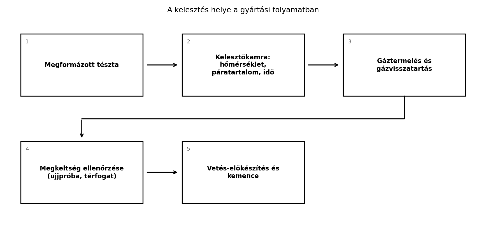
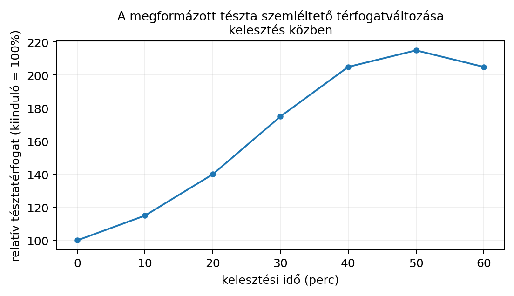

A pékségben a hajnali műszak egyik legkényesebb pontja az, amikor a megformázott zsemlék, kenyerek vagy kalácsok a kelesztőkamrában várnak. Ha a pék túl korán veti be őket, a termék alacsony, tömör és gyakran oldalán repedt lesz. Ha túl későn, a tészta összeesik, savanykás, ragadós felületű, és a megsült bélzet durva, egyenetlen pórusú lehet. A kelesztés tehát nem egyszerűen „várakozás”: ezalatt a tészta gázt termel, lazul, ízesedik, és a felülete alkalmassá válik a vetésre. Aki a kelesztés paramétereit és folyamatait érti, az a hibákat nem találgatással, hanem okból javítja.
Képzeljük el a tésztát, mint sok ezer apró, rugalmas falú ballont. Az élesztő és a kovászbaktériumok szén-dioxidot termelnek. A gáz a sikérháló által bezárt buborékokba diffundál, és felfújja azok falát. Eközben az enzimek apró, felhasználható darabokra bontják a keményítőt és a fehérjét, a víz pedig folyamatosan átrendeződik. Az eredmény: könnyű, pórusos, aromás termék. Az alábbi folyamatábra a kelesztés helyét és fő lépéseit mutatja.

A folyamat során a tészta térfogata jellemzően fokozatosan növekszik, majd elér egy csúcsot. Túlkelesztésnél a térfogat már csökkenhet, mert a sikérháló elgyengül, és a gáz egy része elillan. Az alábbi görbe ezt szemlélteti, tanulási adatokkal.

A görbe nem egyetemes mérési eredmény, hanem a folyamat jellegét mutatja: a kelesztés elején lassabb, közepén gyorsabb a térfogatnövekedés, a végén pedig fokozatosan lelassul, majd túlkelesztés esetén visszaesik.
A görbe három szakaszának a tésztában három jellegzetes szerkezet felel meg. Az alábbi nagyított, sematikus metszeten a szürke, sraffozott mátrix a sikérháló, a pontok a keményítőszemcsék, a kis oválisok az élesztősejtek, az üres körök a szén-dioxiddal telt gázcellák. Alulkelt tésztában (1) a cellák kicsik és sűrűek, a sikérfal vastag; érett tésztában (2) a cellák nagyobbak és egyenletesek, a falak vékonyak, de épek; túlkelt tésztában (3) a megnyúlt falak elszakadnak, a cellák összeolvadnak, és a gáz egy része elillan.
A „ballonok” tehát addig jók, amíg a faluk ép: a kelesztés célja a gáztermelés és a gázvisszatartás egyensúlya, nem a lehető legnagyobb térfogat. A HTML-kiadásban a három állapot lejátszással egymás után követhető.
Definíció. A kelesztés (proofing) a megformázott tésztadarabok sütés előtti utolsó, szabályozott körülmények közötti pihentetése, amelyben az alkoholos erjedés, a tésztától függően a tejsavas erjedés, az enzimes bontófolyamatok és a kolloidális változások révén gázok keletkeznek és visszatartódnak, a tészta térfogata nő, a bélzet szerkezete kialakul, és a felület vetésre alkalmassá válik.
A kelesztés céljai:
Figyelem. A kelesztés nem azonos a tésztaéréssel. A tésztaérés a dagasztás utáni, még osztatlan tészta pihentetése; a kelesztés már a megformázott, darabolt tésztadarabok utolsó, sütés előtti pihentetése. Az érés során a tésztát még több irányban mozgatjuk, a kelesztés során viszont már nem gyúrjuk át, mert az a kialakuló gázbuborékokat tönkretenné.
Ahhoz, hogy a kelesztés sikeres legyen, a következő feltételeknek kell teljesülniük:
A hőmérséklet a kelesztés leggyorsabban ható paramétere. Az élesztő optimális hőmérséklete a sütőipari gyakorlatban körülbelül 25–35 °C; 40–45 °C fölött az élesztősejtek károsodnak, emiatt a kelesztés leáll vagy erősen visszaesik. A pontos érték termékenként, élesztőtípusonként és lisztadagonként eltérő lehet, ezért mindig a gyártmánylap és a gyártói adatlap az irányadó.
Szabály. Minél magasabb a kelesztőkamra hőmérséklete a megengedett tartományon belül, annál gyorsabb a gáztermelés, de annál nagyobb a túlkelesztés, a felületi kiszáradás és a savanyodás veszélye. Az alacsonyabb hőmérséklet lassabb, de egyenletesebb érést, jobb aromát és jobb irányíthatóságot adhat.
A tészta maghőmérséklete lassabban követi a kamra hőmérsékletét, mint a levegőé. A nagyobb darabok hőtehetetlensége nagyobb, ezért a kenyeret a zsemlénél általában hosszabb ideig kell keleszteni, még azonos kamrahőmérsékleten is.
A relatív páratartalom azt mutatja meg, hogy a levegőben lévő vízgőz mennyisége hány százaléka az adott hőmérsékleten lehetséges maximális vízgőzmennyiségnek. Jele: .
A kelesztőkamrában a relatív páratartalmat jellemzően 70–85 % közé állítják, de ez tanulási példa. Alacsony páratartalomnál a tészta felülete gyorsan szárad, bőrösödik, ami gátolja a térfogatnövekedést, és sütés közben repedésekhez vezethet. Túl magas páratartalomnál a tészta felülete ragad, a darabok összetapadhatnak, a kamra falán pára csapódik le, és a nedves, meleg környezet a penészedés kockázatát is növeli.
Szabály. A relatív páratartalmat úgy kell beállítani, hogy a tészta felülete a kelesztés végén enyhén száraz, de rugalmas maradjon, ne repedjen és ne ragadjon.
A kelesztési idő nem önálló abszolút szám, hanem a hőmérséklet, a páratartalom, az élesztő- és kovászadag, a tészta összetétele, a darabtömeg és a forma együttes következménye. Tanulási példaként egy vizes zsemle kelesztése 32 °C-on, 80 % relatív páratartalom mellett 35–50 perc; egy nagyobb búzakenyéré 45–90 perc is lehet. Ezt a gyártmánylap pontosan rögzíti.
Szabály. Az időt soha ne kizárólag órával mérjük. A megkelt tészta jeleit is ellenőrizni kell: ujjpróba, térfogatnövekedés, felületi állapot. A pontos jeleket az A megkeltség jelei, kelesztési hibák és vetés-előkészítő műveletek alfejezet tárgyalja.
A kelesztőkamrában egyenletes, lassú légáramlás szükséges. Az erős huzat a tésztafelület egyenlőtlen száradását okozza, a darabok féloldalasan kelnek, felszínük bőrösödik. A légáramlást ezért terelőkkel, megfelelő ventilátor-sebességgel és a kocsik helyes elhelyezésével kell szabályozni.
A tészta-összetétel minden kelesztési paraméterre hat:
A nagyobb darabok lassabban melegszenek át, ezért hosszabb kelesztést igényelnek. A hosszúkás, lapos vagy vékony darabok felület/térfogat aránya nagyobb, ezért könnyebben kiszáradnak, mint a gömbölyű, tömör darabok. A fonott és hajtogatott tésztáknál a zárások mentén a felületnek feszesnek kell maradnia, hogy sütés közben ne nyíljanak szét.
Továbbvitt eredmény. A kelesztési hőmérséklet, relatív páratartalom, idő, légmozgás és a tészta-összetétel hatásait a Kelesztőkamrák és beállításuk, valamint a Hűtő-kelesztő berendezések és gépi kelesztők alfejezetek használják; a megkelt tészta jeleit és a túlkelesztési hibákat az A megkeltség jelei, kelesztési hibák és vetés-előkészítő műveletek alfejezet viszi tovább.
A kelesztés alatt nemcsak gáz keletkezik, hanem a tészta kémiai, biológiai és fizikai szerkezete is megváltozik.
A sütőélesztő a tészta cukrait alakítja át. A liszt keményítőjéből az amiláz enzimek maltózt szabadítanak fel, az élesztő maltáz enzimje pedig a maltózt két glükózmolekulára bontja. A glükóz ezután az alkoholos erjedés kiinduló anyaga:
A szén-dioxid a tészta legfontosabb lazítógáza. Az alkohol a tésztában részben felhalmozódik, részben a sütés során elillan; kis mennyisége azonban hozzájárul a termék illatához és ízéhez. Az alkoholos erjedés hőt is felszabadít, ezért a kelesztés alatt a tészta maghőmérséklete kissé emelkedhet.
A kovászos tésztákban nemcsak élesztő, hanem tejsavbaktériumok is dolgoznak. A homofermentatív tejsavbaktériumok a glükózból főként tejsavat képeznek, így a tészta pH-ja csökken. A heterofermentatív tejsavbaktériumok a tejsav mellett ecetsavat, etanolt és szén-dioxidot is termelnek, ezért a lazításban is részt vesznek.
A tejsavas erjedés jelentősége kelesztéskor:
A kelesztés alatt a kovászos tészta savfoka tehát nő, ezért a kelesztési időt a savfokkal és az érzékszervi jelekkel együtt kell figyelni. A savasodás mértéke a kovász arányától, a kelesztési hőmérséklettől és az időtől függ.
Definíció. Az enzimaktivitás azt fejezi ki, hogy egy enzim adott körülmények között időegység alatt mennyi szubsztrátot alakít át, vagy mennyi terméket képez. A pékségi gyakorlatban az enzimaktivitásra a lisztvizsgálatból, a tészta viselkedéséből és a sütési eredményből következtetünk.
A kelesztés alatt elsősorban a következő enzimek hatnak:
Az enzimaktivitást a hőmérséklet, a pH, a vízaktivitás és a szubsztrát hozzáférhetősége szabályozza. A kelesztés során az enzimek előkészítik a sütési szakaszt: a keményítőből felszabadult cukrok a sütés eleji gyors gázképződést és a kéreg barnulását is támogatják.
A dagasztás után a tészta sikérhálója feszes, a fehérjeszálak részben rendezetlenek. A kelesztés közben a sikérszálak relaxálódnak, azaz megszűnik a túlzott feszesség, a háló egyenletesebbé válik. A víz a keményítőszemcsék és a sikér között folyamatosan átrendeződik; a keményítő duzzad, a sikér pedig rugalmasabb lesz.
Az újonnan képződő szén-dioxid a már meglévő gázbuborékokba diffundál, ezért a buborékok fala vékonyodik, de egyben feszesebbé is válik. A kelesztés akkor optimális, ha a gáztermelés sebessége és a gázvisszatartó képesség összhangban van. Ha a gázfejlődés túl gyors, a buborékfal elrepedhet, a gáz elillan, és a tészta összeesik. Ha a gázfejlődés lassú vagy a háló túl merev, a darab nem növeli a térfogatát.
A kelesztés sikerének egyik legfontosabb elve a gáztermelés és a gázvisszatartó képesség egyensúlya. A tészta kezdetben jól megtartja a képződő gázt, ezért a térfogat növekszik. A kelesztés előrehaladásával a sikérháló egyre vékonyabb, a buborékok közötti falak elvékonyodnak. A túlkelesztés pont az az állapot, amikor a háló már nem bírja a további gáznyomást, a buborékok összeolvadnak, és a tészta összeroskad.
Az optimális kelesztési végpont az, amikor a tészta még rugalmas, az ujjbenyomás lassan, de észrevehetően visszatér, a felület feszes, és a darab vetésre kész. Ezt az állapotot az A megkeltség jelei, kelesztési hibák és vetés-előkészítő műveletek alfejezet mutatja be gyakorlati vizsgálatokkal.
1. példa. Számítsa ki, hogy elméletileg mennyi szén-dioxid keletkezik 1 g glükóz alkoholos erjedésekor.
Adott: 1 g glükóz, glükóz moláris tömege 180 g/mol, szén-dioxid moláris tömege 44 g/mol, 1 mol glükózból 2 mol szén-dioxid.
Keresett: .
A reakcióegyenlet szerint 1 mol glükózból 2 mol CO2 keletkezik, tehát 180 g glükózból CO2.
1 g glükózból:
Ellenőrzés: a kapott érték kisebb, mint a kiindulási glükóz tömege, ami a reakcióegyenlettel összhangban van, mert a glükóz szénatomjainak egy része az alkoholban marad. Ez azonban elméleti felső becslés; a tésztában a CO2 egy része oldódik, illetve kiszökik.
2. példa. Két kelesztőkamra közül az A kamra 32 °C-on, 80 % relatív páratartalommal dolgozik, a B kamra 24 °C-on, 60 % relatív páratartalommal. Ugyanabból a 60 g-os vizes zsemletésztából mindkét kamrába tesznek egy-egy kocsit. Hogyan alakul a kelesztés?
Az A kamrában a tészta gyorsabban kel, felülete puha és rugalmas marad; jellemzően 35–40 perc után vethető. A B kamrában az alacsonyabb hőmérséklet miatt lassabb a gáztermelés, a 60 %-os páratartalom pedig a felület bőrösödését okozza. A B kamrában a tészta kisebb térfogatú, feszesebb felületű lesz, és a sütéskor valószínűbb a repedés. A B kamra esetén vagy növelni kell a páratartalmat, vagy hosszabb kelesztési idővel kell dolgozni, miközben a felületet is óvni kell a kiszáradástól. A konkrét idők tanulási példák, ezért üzemi technológiai lappal ellenőrizendők.
Egy kisebb pékségben nyári hajnalon a kelesztőkamra hőmérséklete 36 °C-ra emelkedett, a páratartalom pedig 90 % fölé. A pék a megszokott idő után ment vetni, de a zsemlék egy része már a kamrában összeesett, a megmaradt darabok felülete ragadós, illata savanykás volt. Az ujjpróba során a benyomás alig tért vissza.
A hiba oka a túlkelesztés volt: a magas hőmérséklet felgyorsította az élesztő és a tejsavbaktériumok működését, a sikérháló elgyengült, a gáz egy része elillant, a tészta savassága megnőtt. A pék a kamrahőmérsékletet 31–32 °C-ra, a páratartalmat 75–80 %-ra állította vissza, és a megkeltséget az időtől függetlenül ujjpróbával ellenőrizte (ezen a hőmérsékleten kb. 35–45 perc, tanulási példa). Amíg a kamra túlmelegedett, a tételt korábban kellett volna vetni. A helyreállított paraméterek mellett a zsemlék újra egyenletesen keltek, a bélzet pórusai finomabbak lettek. A tanulság: a kelesztési időt mindig a kamra tényleges hőmérsékletéhez és páratartalmához kell igazítani, nem elég a megszokott percértékhez ragaszkodni.
Higiénia. A kelesztőkamra meleg, nedves környezete kedvez a penészgombák és a nyálkásodást okozó mikroorganizmusok szaporodásának. A kamrában csak tiszta kelesztőkocsik, tiszta lemezek és szakajtók legyenek. A tésztadarabot csak tiszta kézzel vagy kesztyűvel szabad ellenőrizni, a földre hullott tésztát nem szabad visszadolgozni. A kamra ajtaját, tömítéseit és a lefolyót a takarítási terv szerint rendszeresen tisztítani és szükség szerint fertőtleníteni kell.
HACCP. A kelesztés önmagában általában nem kritikus szabályozási pont, de termékbiztonsági szempontból fontos szabályozási pont vagy műveleti előfeltételi program lehet. Figyelni kell arra, hogy a tészta ne álljon túl hosszan magas hőmérsékleten, mert az a romlást okozó mikroorganizmusok szaporodását és a túlzott savanyodást is elősegítheti. Tanulási példaként figyelhető: a kamrahőmérséklet 25–35 °C, a relatív páratartalom 70–85 %, a kelesztési idő a gyártmánylapban megadott maximum. A tényleges határértékeket a pékség HACCP-terve és a gyártmánylap rögzíti. A mért értékeket dokumentálni kell, és határértéktúllépésnél a tételt minősíteni kell, például túlérettség esetén nem vethető be.
Allergén. Ha valamely allergéntől mentesként (pl. gluténmentesként, tojásmentesként) gyártott termék kelesztése történik – a „mentes” jelölés csak igazolt elkülönítéssel és a jogszabályi feltételek teljesülésével használható (ellenőrizendő: 1169/2011/EU, 828/2014/EU, üzemi allergénterv) –, a kelesztőkamra, a kocsik és a lemezek keresztszennyeződést okozhatnak, ha előzőleg búzalisztes, tojásos vagy tejes tészták keltek ott. Az ilyen mentes tételeket elkülönített, tisztított felületen, jól jelölt kocsikon kell keleszteni. A gyártási sorrendet úgy kell kialakítani, hogy a mentes termékek előbb vagy elkülönített kamrában készüljenek (ellenőrizendő: az üzem allergénkezelési eljárása).
Gépbiztonság. A kelesztőkamra ajtaját, gőz- és elektromos csatlakozásait csak betanítás után, rendeltetésszerűen szabad kezelni. A nedves padló csúszásveszélyt, a forró gőzcső égési sérülést okozhat. A kamra belsejébe (kocsicsere, ujjpróba) csak az ajtó nyitásával, a forró gőzkifúvótól távol nyúlj. A ventilátorhoz, a fűtő- és gőzfejlesztő egységhez, a burkolat mögötti részekhez csak leállított, áramtalanított, újraindítás ellen biztosított berendezésen, a ventilátor teljes leállása után szabad hozzányúlni. A védőburkolatot eltávolítani, a reteszelést megkerülni tilos.
A kelesztés során a pék a következőket ellenőrzi:
1. Túl hideg kamra vagy túl rövid kelesztés. Tünet: a megsült termék alacsony, a bélzet tömör, a héj oldalán gyakran repedés. Ok: kevés gáz képződött, a sikérháló merev maradt. Megoldás: hosszabb kelesztési idő, magasabb kamrahőmérséklet, aktívabb kovász vagy előtészta használata.
2. Túl meleg kamra vagy túl hosszú kelesztés. Tünet: a tészta összeesik, felülete ragadós, szaga savanykás, a bélzet durván lyukas. Ok: a sikérháló elgyengült, a gáz elillant, a savtermelés felerősödött. Megoldás: rövidebb idő, alacsonyabb hőmérséklet, kisebb élesztőadag, a tétel gyorsabb vetése.
3. Alacsony páratartalom. Tünet: a tészta felülete bőrös, a térfogat kicsi, sütés közben repedések. Ok: a felület kiszáradt, ezért nem tudott egyenletesen megnyúlni. Megoldás: a kamra párásítása, a tészta letakarása, a kelesztési idő és a légmozgás csökkentése.
4. Huzat a kamrában. Tünet: a tészta féloldalasan kel, a felület egyenetlenül szárad. Ok: az erős légáram a tészta egyik oldalát szárítja és hűti. Megoldás: a légterelők beállítása, a kamra ajtajának megfelelő zárása, a kocsik szabályos elhelyezése.
5. Elégtelen élesztőműködés. Tünet: a kelesztés alig indul meg. Ok: a dagasztóvíz túl meleg volt és károsította az élesztőt, vagy a só és az élesztő közvetlenül érintkezett, esetleg az élesztő elöregedett. Megoldás: a dagasztóvíz hőmérsékletének ellenőrzése, a só és az élesztő külön adagolása, friss élesztő használata.
6. Túl nagy élesztőadag. Tünet: a tészta nagyon gyorsan kel, majd hamar összeesik. Ok: a gázfejlődés gyorsabb, mint a sikérháló erősödése. Megoldás: kisebb élesztőadag, alacsonyabb kelesztési hőmérséklet vagy rövidebb idő.
1. feladat (A) Sorolja fel a kelesztés céljait, és mindegyikhez írjon egy-egy példát a kenyérgyártásban.
2. feladat (A) Írja fel az alkoholos erjedés egyszerűsített egyenletét, és nevezze meg a két terméket.
3. feladat (B) Egy zsemletészta kelesztése 32 °C kamrahőmérsékleten, 80 % relatív páratartalom mellett 40 perc. Mi történik várhatóan, ha ugyanaz a tészta 24 °C-on, 60 % relatív páratartalom mellett kel? Magyarázza a különbséget a gáztermelés és a felületi állapot szempontjából.
4. feladat (B) Számítsa ki, hogy elméletileg hány gramm szén-dioxid keletkezik 3 g glükóz alkoholos erjedésekor. Használja az 1. kidolgozott példa arányát.
5. feladat (C) Tervezzen meg egy kovászos kenyér kelesztéséhez egy ellenőrző lapot, amelyen szerepelnek a mérendő paraméterek, a mérés gyakorisága, a tanulási céltartomány, valamint a beavatkozás, ha a tészta túlkelt.
6. feladat (D) Hibakeresés: reggel a zsemlék felülete repedezik, térfogatuk kicsi, bélzetük tömör. A kamra hőmérséklete 24 °C, a relatív páratartalom 60 %, a kelesztési idő 35 perc. Melyik paraméter a leginkább gyanús? Milyen javítást javasolna, és miért?
1. feladat megoldása. A kelesztés céljai például kenyérgyártásban: lazítás (a bélzet pórusos lesz), térfogatnövelés (a vetés előtti darab eléri a kívánt méretet), aromaképzés (alkohol, savak, egyéb aromaanyagok), szerkezeti rendeződés (a sikérháló relaxálódik), felületi előkészítés (a vágás nem szakad be), sütési tulajdonság javítása (jobb kemencerugás). A tanuló által megfogalmazott példák akkor jók, ha ezekhez kötődnek.
2. feladat megoldása. Az egyszerűsített egyenlet: glükóz → etanol + szén-dioxid. Képlettel:
A két termék: etanol (alkohol) és szén-dioxid.
3. feladat megoldása. 24 °C-on az élesztő lassabban termel gázt, ezért a kelesztési idő hosszabb lenne, vagy a termék kisebb térfogatú. A 60 %-os páratartalom a tésztafelület kiszáradását okozza, ezért a felület bőrösödik, a tészta nehezebben nyúlik, és sütéskor repedhet. A két hatás együtt azt jelenti, hogy a tészta tömörebb, feszesebb, és valószínűleg rosszabb lesz a sütési eredménye.
4. feladat megoldása. Adott: 3 g glükóz, 1 g glükózból elméletileg kb. 0,489 g CO2. Keresett: a keletkező CO2 tömege.
Ellenőrzés: 3 g glükózból az arányok szerint valamivel kevesebb, mint 1,5 g CO2 keletkezik, ami összhangban van a kiindulási tömeggel, mert az alkohol is tömeggel bír.
5. feladat megoldása. A megtervezett ellenőrző lapnak legalább ezeket kell tartalmaznia: a tétel azonosítója, a kamra hőmérséklete, a relatív páratartalom, a kelesztési idő kezdete, a tészta maghőmérséklete, a megkelt tészta jelei, a mért értékek feljegyzésének időpontja, a megengedett tanulási céltartomány (például 26–32 °C, 75–85 % páratartalom, 45–70 perc), és a beavatkozás túlkelesztés esetén (például a tételt nem vetik be, hanem selejtezik, és a következő tételnél csökkentik az időt vagy a hőmérsékletet). A határértékek tanulási példák, a gyártmánylaphoz kell igazítani.
6. feladat megoldása. Két paraméter gyanús: a 60 %-os páratartalom (bőrösödés, repedés) és a 24 °C-on mindössze 35 perces idő (alulkelesztés: kis térfogat, tömör bél). A 24 °C nem túl magas, hanem alacsony: a gáztermelés lassabb, és 35 perc kevesebb a 32 °C-on tanult 35–50 percnél, ezért az alulkelesztés valószínű fő ok. Javítás: 75–85 % páratartalom, 27–32 °C kamrahőmérséklet vagy ugyanazon a hőmérsékleten hosszabb idő, a végpontot ujjpróbával meghatározva (tanulási példa). A javítás után a felület rugalmasabb lesz, és a tészta jobban megtartja a gázt.
A kelesztés a megformázott tésztadarabok sütés előtti, szabályozott pihentetése, amelyben az alkoholos erjedés, a kovászos tésztákban a tejsavas erjedés, valamint az enzimes és kolloid folyamatok révén szén-dioxid keletkezik, a sikérháló lazul, és a tészta térfogata nő. A legfontosabb paraméterek: hőmérséklet, relatív páratartalom, idő és légmozgás. Az élesztő számára a 25–35 °C, a kamra páratartalmára a 70–85 % tanulási célérték; ezeket a gyártmánylaphoz és a HACCP-tervhez kell igazítani. A kelesztés akkor optimális, ha a gáztermelés és a gázvisszatartó képesség egyensúlyban van: a tészta még rugalmas, felülete feszes, és az ujjpróba lassan visszatérő nyomot mutat. A túlkelesztés összeesést, savanyú illatot és durva bélzetet okoz; a száraz, huzatos kamra bőrösödést és repedést. A kelesztőkamrában a meleg, nedves környezet miatt a higiéniára, az allergénmentes termékek elkülönítésére és a gépbiztonságra különösen figyelni kell. Továbbvitt eredmény: a kelesztési paramétereket és a gáztermelés–gázvisszatartás egyensúlyát az A megkeltség jelei, kelesztési hibák és vetés-előkészítő műveletek, a Kelesztőkamrák és beállításuk és a termékcsoportok technológiai fejezetei alkalmazzák.